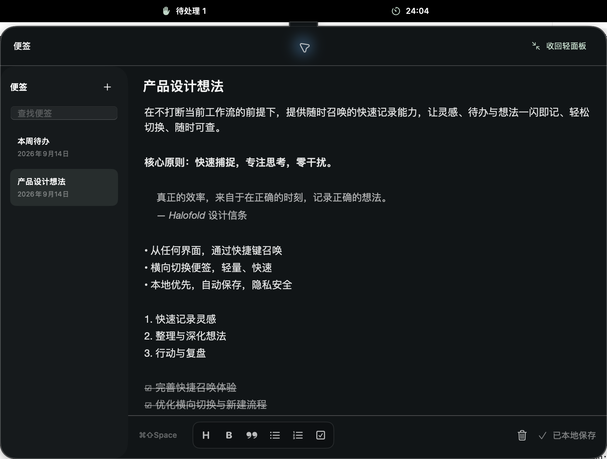

工作台始终连接灵动岛
根据本轮反馈修正：展开只是获得更大的编辑区域，仍然是灵动岛的一部分。
- 固定在顶部灵动岛下方，通过中央连接区域连成一体。
- 移除独立窗口标题栏、红黄绿按钮及自由拖动能力。
- 便签列表整行可点击，包括文字周围的留白与卡片边缘。
- 补齐新建、收回和顶部导航按钮的点击范围。

实际验收
使用独立演示数据。点击第一行右侧留白（163,186）切换到“本周待办”；点击第二行左下边缘（20,267）切回“产品设计想法”。尝试拖动顶部，工作台仍位于原来的顶部位置（900×650，屏幕坐标414,32）。坐标均来自此次验收窗口。
完整测试75项通过；正式配置72项通过；Release构建和本地签名验证通过。屏幕边界适配有自动测试，多显示器真机切换尚未验证。
应用包已更新至项目 dist/Halofold.app，未替换已安装版本。此前独立窗口方案已被本轮修正替代。